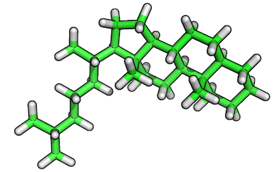
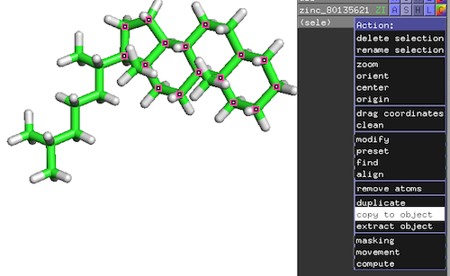
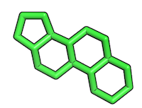
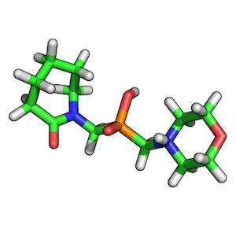
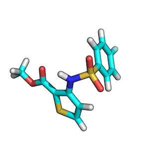
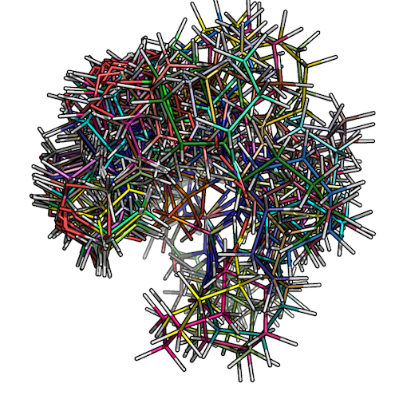
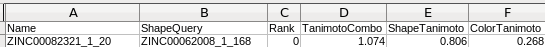
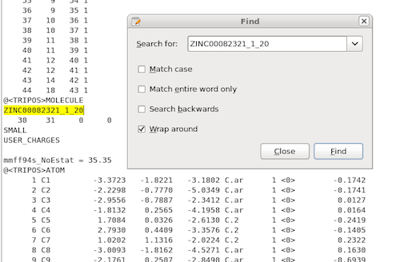
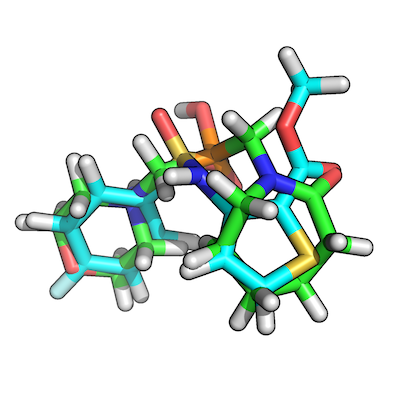

Using OpenEye software for substructure alignments and best-matching low-energy conformer overlays
-- written by Sebastian Raschka on February 23, 2014
TweetThis is a quickguide showing how to use OpenEye software command line tools to align target molecules to a query based on substructure matches and how to retrieve the best molecule overlay from two sets of low-energy conformers.
Sections
Substructure Alignment Using OpenEye OEChem RMSD
1) Extract substructure via PyMOL
2) Convert substructure into a SMILES string
3) Running OpenEye's RMSD tool
4) Scripts to automate the workflow<
Low-Energy Conformer Generation and Overlay
1) Generate low-energy conformers of target and query
2) Overlaying low-energy conformers
3) Retrieving the best overlay-pair
4) Script to automate the workflow
Substructure Alignment Using OpenEye OEChem RMSD
Task:
We want to align a set of molecules to a reference substructure (in contrast to "regular" whole molecule-to-molecule alignments, where the focus lies on minimizing the atom distances over the whole molecule structures).
Requirements:
- OpenEye OEChem RMSD alignment tool
- protein structure visualization tool (e.g., PyMOL)
- Python 3.x
- reference molecule in .mol2 or .pdb format
- target molecule structures as multi- or single-mol2 files.
1) Extracting a substructure via PyMOL
Open the .mol2 or .pdb file of the reference molecule in PyMOL and extract the substructure which you want to align to the query molecules (save it as PDB file).
For this example, I randomly picked a steroid-ring containing structure from the ZINC database (http://zinc.docking.org/substance/80135621), which we want to use here to specifically focus on the alignment of the steroid-ring center itself.
- Top-Panel: Mouse -> Selection Mode -> Atoms
- Click on atoms of interest to mark them as selected
- On the new selection: Action -> copy to object
- Save substructure as PDB file: File -> Save Molecule...
Original reference molecule (ZINC80135621):


Resulting reference substructure:

2) Converting substructure into a SMILES string
I recommend to use the free online SMILES translator at http://cactus.nci.nih.gov/translate/ to upload your converted substructure as PDB file in order to obtain the corresponding SMILES string.
Alternatively, you can also draw the substructure via the "Search Structure" molecule editor on the ZINC website (http://zinc.docking.org/search/structure) to obtain the SMILE string of the substructure. In this case you would not need to use PyMOL to extract the substructure from the main molecule. For such a simple substructure like this steroid-ring construct, this would probably also be the more convenient approach.
3) Running OpenEye's RMSD tool
Run OpenEye's OEChem RMSD tool to align target molecules to the reference molecule based on the extracted substructure. The aligned pairs will be written to a new file. The command-line syntax for a typical usage of the OEChem RMSD toll could be:
/soft/linux64/openeye/.../oechem-utilities/rmsd\ -in /home/.../ query.mol2\ -ref ~/Desktop/reference_molecule.mol2\ -overlay\ -out /home/.../output.mol2\ -automorph false\ -smarts C1CCC2C(C1)CCC3C4CCCC4CCC23
More details about the different parameters (from .../oechem-utilities/rmsd --help):
rmsd -in <filename> -ref <reference filename> Options: -automorph (default false): assign best atom association. By setting this option to true, rmsd will ignore atom names and orders present in the file and will use structural and chemical information to make the best matches. This should fix the problem of abnormally high RMSD values for symmetric molecules/functional groups that have been rotated. -heavyonly (default true): ignores hydrogens in rmsd calculation -overlay (default true): performs a least squares fit and superimposes the molecules prior to making the RMSD calculation. -origconfout : output original conformation too -out : output file name -refout : output reference mol -smarts : rmsd of corresponding matched atoms only
4) Scripts to automate the workflow
4 a) Python script to split a multi-mol2 file
If your target molecules are in a multi-mol2-file, you can use the Python script split_multimol2.py to split it into individual mol2 files:
USAGE: python3 multimol2.mol2 output_directory
4 b) Python subprocess.call() wrapper
And to automate the RMSD substructure alignment over the individual mol2 files, you can use the script multimol2_rmsd_align.py where you just have to modify the path to your OpenEye RMSD executable.
USAGE: python3 mmol2_rmsd_align.py input_dir/ output_dir/ ref.mol2 smiles_string
4 c) Concatenating the results
Finally, you can concatenate the resulting alignments back into one single multi-mol2 file for further analysis and visualization via
cat mol2_dir/*.mol2 > my_multimol2 file
Low-Energy Conformer Generation and Overlay
Task:
We want to retrieve the best overlay between 2 molecules based on geometrical shape and functional chemistry.
Requirements:
- OpenEye OMEGA2 and OpenEye ROCS
- protein structure visualization tool (e.g., PyMOL)
- Python 3.x
- two molecules in .mol2 format
1) Generate low-energy conformers of target and query
For this tutorial I will be using 2 randomly chosen molecules that I downloaded from the ZINC database, which is a free database for commercially available compounds.
ZINC00062008:

ZINC00082321:

To find the best scoring overlay, I recommend to generate low-energy conformers of both target and query molecule via OpenEye's OMEGA2 tool first.
<pre><code>/soft/linux64/openeye/bin/omega2\ -in .../ZINC00062008.mol2\ -out .../ZINC00062008_confs.mol2\ -warts true\ -fraglib /soft/linux64/openeye/data/omega2/fraglib.oeb.gz\ -commentEnergy true\ -prefix om2 </code></pre>
The details about the algorithms behind OMEGA2 conformer generation can be found in the following paper by Paul C. D. Hawkins, A. Geoffrey Skillman, Gregory L. Warren, Benjamin A. Ellingson, and Matthew T. Stahl:
Conformer Generation with OMEGA: Algorithm and Validation Using High Quality Structures from the Protein Databank and Cambridge Structural Database
If you want to know more about the different parameters for the command line interface, please refer to the OpenEye OMEGA2 documentation
The figure below shows how the low-conformer set for ZINC_00062008 would look like:

2) Overlaying low-energy conformers
Now, after we generated ~200 low-energy conformers (200 is the max. default value) for both the target and query molecule, we can use OpenEye ROCS to overlay all low-energy conformations with each other (= ~200 x ~200 overlays). Here, we are only interested in the top-scoring overlayed pair:
<pre><code>/soft/.../rocs\ -query\ -dbase\ -randomstarts 20\ -stats best\ -besthits 0\ -maxhits 0\ -maxconfs 1\ -rankby TanimotoCombo\ -mcquery\ -prefix rcs\ -reportfile rocs.rpt\ -oformat mol2\ -report one\ </code></pre>
It is worth mentioning that we are ranking by the TanimotoCombo here, which is a combination of ShapeTanimoto (3D shape similarity via volume optimization) and ColorTanimoto (functional group matching). Depending on your priorities, you may want to use a different argument for the rankby parameter.
More information about the command line interface can be found at: http://www.eyesopen.com/docs/rocs/current/html/usage.html#command-line-interface.
3) Retrieving the best overlay-pair
Using the OpenEye ROCS command line interface with the parameters listed in the previous section, we will obtain a report file that contains our highest-scored overlay pair, which would be the 20th low-energy conformer of ZINC00082321 and the 168th low-energy conformer of ZINC00062008 in our example:

ROCS will also generate a .mol2 file that includes all of the sampled overlays. Based on the report file, we know in which particular pair we are interested in, and thus we can just write a simple script to retrieve those 2 .mol2 structures from the ROCS multimol2 outputfile, or just use a simple text search to locate the files and save them as individual .mol2s for visualization:

The figure shows how our top-scoring overlay-pair would look like: 
4) Script to automate the workflow
A simple script that is wrapping up the 2 steps mentioned above can be found here: lowenergy_conf_overlay.py